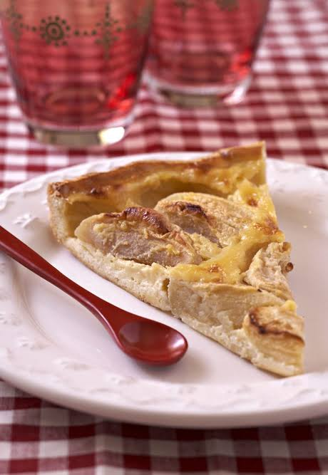

Here's the link to the original recipe at allrecipes.
My favorite apple tart! My mother used to cook this French apple tart for us, usually on a Sunday. I wanted to bake something special, so I asked her for the recipe. It has a lovely, rich crust with thin slices of apple arranged in a pretty pattern, but the frangipane filling is the part that makes it really delicious!